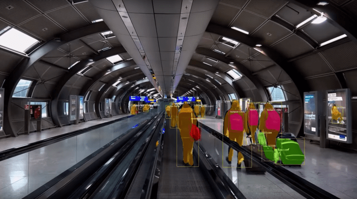
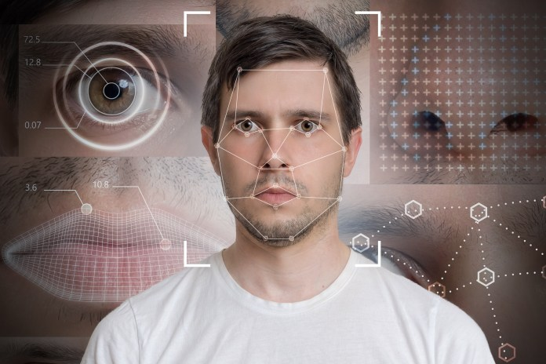
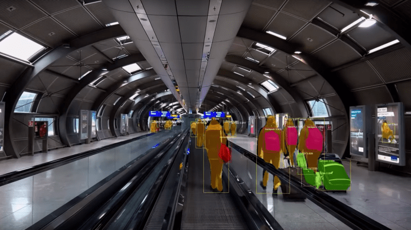
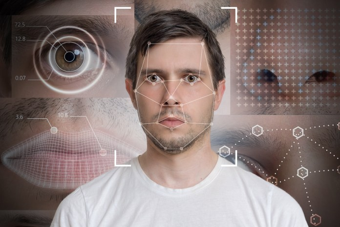

Computer Vision
 



Project information
- Category: Computer Vision
- Author: Lokesh Sharma
- Project date: 01 March, 2020
What Is Computer Vision.?
Computer vision is an interdisciplinary scientific field that deals with how computers can gain high-level understanding from digital images or videos. From the perspective of engineering, it seeks to understand and automate tasks that the human visual system can do
Computer vision tasks include methods for acquiring, processing, analyzing and understanding digital images, and extraction of high-dimensional data from the real world in order to produce numerical or symbolic information
How does Computer Vision Work .?
Computer Vision primarily relies on pattern recognition techniques to self-train and understand visual data. The wide availability of data and the willingness of companies to share them has made it possible for deep learning experts to use this data to make the process more accurate and fast.
While machine learning algorithms were previously used for computer vision applications, now deep learning methods have evolved as a better solution for this domain. For instance, machine learning techniques require a humongous amount of data and active human monitoring in the initial phase monitoring to ensure that the results are as accurate as possible. Deep learning on the other hand, relies on neural networks, and uses examples for problem solving. It self-learns by using labeled data to recognise common patterns in the examples.
Computer vision is an interdisciplinary field that deals with how computers can be made to gain high-level understanding from digital images or videos. From the perspective of engineering, it seeks to automate tasks that the human visual system can do. "Computer vision is concerned with the automatic extraction, analysis and understanding of useful information from a single image or a sequence of images. It involves the development of a theoretical and algorithmic basis to achieve automatic visual understanding.
Computer Vision Programming Languages :-
We have several programming language choices for computer vision
- OpenCV using C++
- OpenCV using Python
- OpenCV using Java
- MATLAB
Beginners often pick OpenCV with Python for its flexibility. It’s a language most programmers are familiar with, and owing to its versatility is very popular among developers.
How To Learn Computer Vision :-
Depending on the uses, computer vision has the following uses:
-
Laying the Foundation:- Probability, statistics, linear algebra, calculus and basic statistical knowledge are prerequisites of getting into the domain. Similarly, knowledge of programming languages like Python and MATLAB will help you grasp the concepts better.
-
Digital Image Processing:- Learn how to compress image and videos using JPEG and MPEG files. Knowledge of basic image processing tools like histogram equalisation, median filtering and more are required. Once you know the basics of image processing and restoration, you will be ready to pick up the more critical skills of computer vision.
-
Machine Learning Basics:- Knowledge of Convoluted Neural Networks, fully connected neural networks, support vector machines, recurrent neural networks, generative adversarial network, and autoencoders are necessary to get started with computer vision.
Basic Computer Vision:- The next step in the process is to decode the mathematical models involved in the image and video formulations. Once you understand how pattern recognition and signal processing works, you can get into advanced learning.
Computer Vision Basic Functions :-
Computer vision is a field of study which enables computers to replies the human visualsystems , it is a subset of AI which colects information from digitals images or vidoes and processes them to define the attributes , these are the basics function which can performs by the computer vision :-
- Optical Character recognition [OCR]
- Retail Automation
- Machine Inspection
- 3D Model Building
- Medical Imaging
- Match Move
- Motion Capture
- Surveillance
- Automotive Safety
- FingerPrint Recognition And Biometrics
Computer Vision Applications :-
Computer vision is a field of study which enables computers to replicate the human visual system. It’s a subset of artificial intelligence which collects information from digital images or videos and processes them to define the attributes. The entire process involves image acquiring, screening, analysing, identifying and extracting information. This extensive processing helps computers to understand any visual content and act on it accordingly.
Medical Imaging :- Computer Vision helps in MRI reconstruction, automatic ,pathology, diagnosis ,machineaided surgeries and more.
AR/VR :- Object occusion , outside-in tracking inside-out tracking for virtual and augmented reality.
Smartphones :- All the photo fillters , Qr Code Scanners , panorama construction , computational photography face detectors , image detectors that you use are computer vision applications.
Internet :- Image search , geolocalistation , image captioning ,Ariel imaging for maps video categorisation and more.
Retail :- Amazone Recently opened to the public the amazone go store where shoppers need not wait in line at the checkout counter to pay for their purchases.
Healthcare :- surgical has developed blood monitoring solutions that are describedto estimate in real-time blood loss during medical situatons. This solutionsthe website reports , maximizes transfuions and recognizes haemorrhage better than the human eye.
Banking :- Mitek Systems offers image recognition applications that use machine learning to classify extract data , and authenticate documents such as passports, ID Cards , driver`s licenses and checks.
Industrial :- In the Industrial sectors , Computer vision applications such as Osprey informatic are being used to moniter the status of critical in frastructure,such as remote wells, industrial facilities,work activity and site security.
Future of Computer Vision :-
Computer vision is a fast-developing field and has gathered a lot of attention from various industries. It will be able to function on a broader spectrum of content in the future.
The domain already enjoys a steady market of 2.37 million US dollars and is expected to grow at a 47% CAGR till 2023. With amount of data we are generating every day, it’s only natural that machines will use that data to craft solutions.
Once computer vision experts can resolve the current problems of the domain, we can expect a trustworthy system that automates content moderation and monitoring. With corporate giants like Google, Facebook, Apple and Microsoft investing in computer vision, it’s only a matter of time before it takes over the global market. Upskill in this domain to make the most of this disruptive economy.